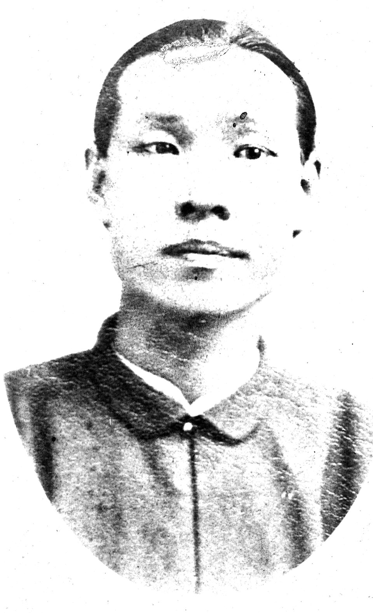

<link
  href="https://cdn.jsdelivr.net/npm/bootstrap@5.3.3/dist/css/bootstrap.min.css"
  rel="stylesheet"
  integrity="sha384-QWTKZyjpPEjISv5WaRU9OFeRpok6YctnYmDr5pNlyT2bRjXh0JMhjY6hW+ALEwIH"
  crossorigin="anonymous"
/>
<link rel="stylesheet" href="../assets/css/navbar.css" />
<nav class="navbar navbar-dark bg-dark px-3 shadow-sm">
  <div class="container-fluid">
    <button
      class="navbar-toggler me-2"
      id="sidebarToggle"
      type="button"
      aria-controls="sidebar-panel"
      aria-expanded="true"
      aria-label="Contraer o expandir el menú lateral"
      title="Contraer o expandir el menú lateral"
    >
      <span class="navbar-toggler-icon"></span>
    </button>
    <a class="navbar-brand d-flex align-items-center gap-2 me-auto" href="#dashboard">
      
      <span class="navbar-brand-text fw-semibold">Nexo Admin</span>
    </a>

    <div class="d-flex align-items-center gap-2 text-white">
      
      <span class="fw-medium">Li Wei</span>
      <button class="btn btn-outline-light btn-sm ms-2" type="button" aria-label="Cerrar sesión">
        <span class="d-none d-sm-inline">Cerrar sesión</span>
        <span class="d-sm-none">Salir</span>
      </button>
      <a
        class="visually-hidden"
        href="https://commons.wikimedia.org/wiki/File:Portrait_of_Chinese_man_(15102570609).jpg"
        target="_blank"
        rel="noopener noreferrer"
      >
      </a>
    </div>
  </div>
</nav>
<script src="../assets/js/sidebar-toggle.js"></script>
